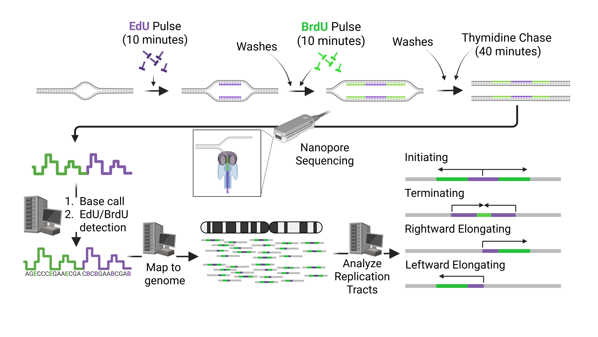
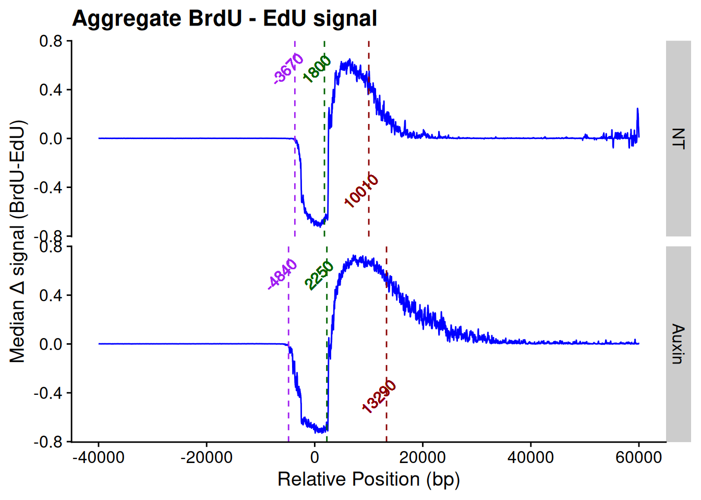

library(here)
library(tidyverse)
library(cowplot)
library(zoo)
cat("Working from:", here::here(), "\n")Working from: /home/runner/work/Krishanu_MyStuff/Krishanu_MyStuff Krishanu Dhar
July 22, 2025
This quarto document summarizes and analyzes DNA replication track data outputted from a Snakemake Pipeline [Link]. Here, I will filter and tidy the data, then plot it out independently, as well as comparitively. Further I will try to predict labeling states within each sample. If the model doesn’t look as robust as I expected, I will use my own algorithm to predict the states.
There are a couple of things that we should know about the data that we are going to use for the upcoming analyses.
First, we have bedfiles, which consist of read IDs and their metadata. These read IDs are unique, because these have DNA replication footprints. These footprints actually look pretty colorful (will see them in just a few moments). To better understand, here is snap of the workflow:

library(here)
library(tidyverse)
library(cowplot)
library(zoo)
cat("Working from:", here::here(), "\n")Working from: /home/runner/work/Krishanu_MyStuff/Krishanu_MyStuff Let’s have a glimpse at one of the bedfiles I mentioned above:
try_bed <- read_table(
here("projects", "data", "bedfiles", "NT", "leftForks_DNAscent_forkSense.bed"),
comment = "#",
col_names = FALSE
)
options(readr.show_col_types = FALSE)
# Quick look
glimpse(try_bed)Rows: 195
Columns: 9
$ X1 <chr> "chr1", "chr1", "chr1", "chr1", "chr1", "chr1", "chr1", "chr1", "ch…
$ X2 <dbl> 1325962, 5853908, 11261820, 35847942, 38897717, 39298905, 44646358,…
$ X3 <dbl> 1332304, 5863452, 11274951, 35858135, 38910415, 39311525, 44655386,…
$ X4 <chr> "64d3f3d8-4f2f-4c03-ad7d-f3268d7e47ac", "8e3a55a6-a88c-4c4f-b52a-70…
$ X5 <dbl> 1310499, 5839126, 11252034, 35847937, 38894320, 39298565, 44646339,…
$ X6 <dbl> 1357925, 5869143, 11326927, 35907478, 38920742, 39320633, 44667509,…
$ X7 <chr> "rev", "rev", "rev", "fwd", "rev", "fwd", "rev", "fwd", "rev", "fwd…
$ X8 <dbl> 6306, 9555, 13098, 10012, 12506, 12478, 9022, 3598, 12521, 6140, 67…
$ X9 <dbl> 0.761731, 0.060901, 0.442901, -3.000000, -3.000000, -3.000000, -3.0…# Assign proper column names
colnames(try_bed) <- c(
"chrom", "fork_start", "fork_end", "read_id",
"read_start", "read_end", "strand",
"fork_length", "score"
)
glimpse(try_bed)Rows: 195
Columns: 9
$ chrom <chr> "chr1", "chr1", "chr1", "chr1", "chr1", "chr1", "chr1", "c…
$ fork_start <dbl> 1325962, 5853908, 11261820, 35847942, 38897717, 39298905, …
$ fork_end <dbl> 1332304, 5863452, 11274951, 35858135, 38910415, 39311525, …
$ read_id <chr> "64d3f3d8-4f2f-4c03-ad7d-f3268d7e47ac", "8e3a55a6-a88c-4c4…
$ read_start <dbl> 1310499, 5839126, 11252034, 35847937, 38894320, 39298565, …
$ read_end <dbl> 1357925, 5869143, 11326927, 35907478, 38920742, 39320633, …
$ strand <chr> "rev", "rev", "rev", "fwd", "rev", "fwd", "rev", "fwd", "r…
$ fork_length <dbl> 6306, 9555, 13098, 10012, 12506, 12478, 9022, 3598, 12521,…
$ score <dbl> 0.761731, 0.060901, 0.442901, -3.000000, -3.000000, -3.000…Second, we have multiple bedgraph files. Each read ID is associated with two bedgraph files (one for EdU and one for BrdU). Let’s look at a pair of bedgraphs for a read ID.
brdu_bed <- read_tsv(
here("projects", "data", "bedgraphs", "NT", "BrdU__0b9d33df-6203-4c55-9ac5-c20ce628dde9.bedgraph")
)
edu_bed <- read_tsv(
here("projects", "data", "bedgraphs", "NT", "EdU__0b9d33df-6203-4c55-9ac5-c20ce628dde9.bedgraph")
)
# Assigning column names
colnames(edu_bed) <- c("chrom", "start", "end", "prob_score")
colnames(brdu_bed) <- c("chrom", "start", "end", "prob_score")
head(brdu_bed)# A tibble: 6 × 4
chrom start end prob_score
<chr> <dbl> <dbl> <dbl>
1 chr16 8110549 8110649 0.00896
2 chr16 8110539 8110639 0.00882
3 chr16 8110529 8110629 0.00911
4 chr16 8110519 8110619 0.00947
5 chr16 8110509 8110609 0.00951
6 chr16 8110499 8110599 0.00933# A tibble: 6 × 4
chrom start end prob_score
<chr> <dbl> <dbl> <dbl>
1 chr16 8110549 8110649 0.908
2 chr16 8110539 8110639 0.851
3 chr16 8110529 8110629 0.850
4 chr16 8110519 8110619 0.828
5 chr16 8110509 8110609 0.806
6 chr16 8110499 8110599 0.786You might have guessed it from this. These bedgraphs hold information for the probability score of EdU/BrdU (thymidine analogs) across the entire read for every 100 base pairs (bin size).
Organize and tidy the data for better clarity.
Plot the data
Try predicting the labeling states within each sample, and find out their transition points
# ===Non-treated Sample (NT)===
left_df <- read_table(
here("projects", "data", "bedfiles", "NT", "leftForks_DNAscent_forkSense.bed"),
comment = "#",
col_names = FALSE
)
right_df <- read_table(
here("projects", "data", "bedfiles", "NT", "rightForks_DNAscent_forkSense.bed"),
comment = "#",
col_names = FALSE
)
origin_df <- read_table(
here("projects", "data", "bedfiles", "NT", "origins_DNAscent_forkSense.bed"),
comment = "#",
col_names = FALSE
)
termination_df <- read_table(
here("projects", "data", "bedfiles", "NT", "terminations_DNAscent_forkSense.bed"),
comment = "#",
col_names = FALSE
)
# Set column names (Origins and Terminations have different structure)
colnames(left_df) <- colnames(right_df) <- c(
"chrom", "fork_start", "fork_end", "read_id",
"read_start", "read_end", "strand",
"fork_length", "score"
)
colnames(origin_df) <- colnames(termination_df) <- c("chrom", "fork_start", "fork_end", "read_id", "read_start", "read_end", "strand")
# Merge left and right forks
merged_df <- rbind(left_df, right_df)
# Extract read IDs
merged_ids <- unique(trimws(as.character(merged_df$read_id)))
exclude_ids <- unique(trimws(as.character(c(origin_df$read_id, termination_df$read_id))))
# Filter out excluded read IDs
filtered_ids <- setdiff(merged_ids, exclude_ids)
filtered_df_NT <- merged_df |>
filter(read_id %in% filtered_ids)
# Optional: Exclude reads with score == -3
filtered_df_NT <- filtered_df_NT |>
filter(score != -3.000000)
# ===Treated sample (Auxin)===
left_df <- read_table(
here("projects", "data", "bedfiles", "Auxin", "leftForks_DNAscent_forkSense.bed"),
comment = "#",
col_names = FALSE
)
right_df <- read_table(
here("projects", "data", "bedfiles", "Auxin", "rightForks_DNAscent_forkSense.bed"),
comment = "#",
col_names = FALSE
)
origin_df <- read_table(
here("projects", "data", "bedfiles", "Auxin", "origins_DNAscent_forkSense.bed"),
comment = "#",
col_names = FALSE
)
termination_df <- read_table(
here("projects", "data", "bedfiles", "Auxin", "terminations_DNAscent_forkSense.bed"),
comment = "#",
col_names = FALSE
)
# Set column names (Origins and Terminations have different structure)
colnames(left_df) <- colnames(right_df) <- c(
"chrom", "fork_start", "fork_end", "read_id",
"read_start", "read_end", "strand",
"fork_length", "score"
)
colnames(origin_df) <- colnames(termination_df) <- c("chrom", "fork_start", "fork_end", "read_id", "read_start", "read_end", "strand")
# Merge left and right forks
merged_df <- rbind(left_df, right_df)
# Extract read IDs
merged_ids <- unique(trimws(as.character(merged_df$read_id)))
exclude_ids <- unique(trimws(as.character(c(origin_df$read_id, termination_df$read_id))))
# Filter out excluded read IDs
filtered_ids <- setdiff(merged_ids, exclude_ids)
filtered_df_Aux <- merged_df |>
filter(read_id %in% filtered_ids)
# Optional: Exclude reads with score == -3
filtered_df_Aux <- filtered_df_Aux |>
filter(score != -3.000000)
filtered_df_NT <- as.data.frame(filtered_df_NT)
filtered_df_Aux <- as.data.frame(filtered_df_Aux)
# Viewing the filtered dataframes
glimpse(filtered_df_NT)Rows: 166
Columns: 9
$ chrom <chr> "chr1", "chr1", "chr1", "chr1", "chr1", "chr1", "chr1", "c…
$ fork_start <dbl> 1325962, 5853908, 11261820, 104445678, 169175860, 17758184…
$ fork_end <dbl> 1332304, 5863452, 11274951, 104451816, 169189462, 17760261…
$ read_id <chr> "64d3f3d8-4f2f-4c03-ad7d-f3268d7e47ac", "8e3a55a6-a88c-4c4…
$ read_start <dbl> 1310499, 5839126, 11252034, 104429126, 169154802, 17756058…
$ read_end <dbl> 1357925, 5869143, 11326927, 104464577, 169209614, 17761424…
$ strand <chr> "rev", "rev", "rev", "fwd", "fwd", "rev", "rev", "rev", "r…
$ fork_length <dbl> 6306, 9555, 13098, 6140, 13472, 20531, 15511, 14073, 9069,…
$ score <dbl> 0.761731, 0.060901, 0.442901, 0.143650, 0.626286, 0.323392…Rows: 145
Columns: 9
$ chrom <chr> "chr1", "chr1", "chr1", "chr10", "chr10", "chr10", "chr11"…
$ fork_start <dbl> 42555757, 74913117, 88048670, 5107329, 35278521, 101796909…
$ fork_end <dbl> 42567801, 74938602, 88069287, 5127677, 35289612, 101811662…
$ read_id <chr> "b12f510a-f17b-40b7-97ab-cafe779352a3", "832eb7fc-dea3-468…
$ read_start <dbl> 42523710, 74885160, 88000876, 5072168, 35242164, 101772252…
$ read_end <dbl> 42622859, 74961619, 88162060, 5140342, 35308086, 101813531…
$ strand <chr> "rev", "fwd", "rev", "fwd", "rev", "rev", "fwd", "rev", "f…
$ fork_length <dbl> 11948, 25421, 20462, 20119, 10989, 14510, 20322, 10766, 13…
$ score <dbl> 0.092489, 0.056514, 0.222898, 0.083192, 0.149709, 0.359784…We are going to now see how the ‘.bedgraph’ files look. I am going to first make an aggregate plot of them (one for each of the samples).
To start, we will need the help of a few user-defined functions. We will call them helper functions. These functions will have multiple input parameters, and at the same time they will return somethings as they are called..
read_bedgraph_tracks <- function(directory) {
filenames <- list.files(path = directory, pattern = ".bedgraph")
dataframes <- lapply(file.path(directory, filenames), read.table)
names(dataframes) <- filenames
basenames <- gsub(".*__", "", filenames)
brdu_edu_df_list <- lapply(basenames, function(base) {
brdu <- dataframes[[paste0("BrdU__", base)]]
edu <- dataframes[[paste0("EdU__", base)]]
df <- data.frame(
brdu[, 1:3],
BrdU = brdu[, 4],
EdU = edu[, 4],
diff = brdu[, 4] - edu[, 4],
id = base
)
colnames(df) <- c("chromosome", "start", "end", "BrdU", "EdU", "diff", "read_ID")
return(df)
})
return(brdu_edu_df_list)
}
align_diff_by_minimum <- function(df, window_size = 500) {
df$diff_roll <- zoo::rollmean(df$diff, k = window_size, fill = NA, align = "center")
min_start <- df$start[which.min(df$diff_roll)]
max_start <- df$start[which.max(df$diff_roll)]
if (min_start > max_start) df$start <- rev(df$start)
min_start <- df$start[which.min(df$diff_roll)]
df$x <- df$start - min_start
return(df)
}
summarize_combined_tracks <- function(combined_df) {
combined_df |>
group_by(x) |>
summarise(
median_diff = median(diff, na.rm = TRUE),
mean = mean(diff, na.rm = TRUE),
sd = sd(diff, na.rm = TRUE),
n = sum(!is.na(diff)),
se = sd / sqrt(n),
ci_lower = mean - 1.96 * se,
ci_upper = mean + 1.96 * se,
.groups = "drop"
)
}
detect_signal_boundaries <- function(summary_df) {
roll_medians <- zoo::rollmedian(summary_df$median_diff, k = 151, align = "left", na.pad = TRUE)
edu_start_idx <- which(roll_medians <= -0.1 & summary_df$x > -20000)
edu_start <- if (length(edu_start_idx) > 0) summary_df$x[min(edu_start_idx)] else NA
brdu_start <- NA
if (!is.na(edu_start)) {
idx_range <- which(summary_df$x > 0)
above_zero <- idx_range[roll_medians[idx_range] > 0]
if (length(above_zero) > 0) brdu_start <- summary_df$x[above_zero[1]]
}
brdu_end <- NA
if (!is.na(brdu_start)) {
brdu_max_idx <- which.max(summary_df$x)
later_range <- which(summary_df$x > brdu_max_idx)
below_thresh <- later_range[roll_medians[later_range] <= 0.5]
if (length(below_thresh) > 0) brdu_end <- summary_df$x[below_thresh[1]]
}
summary_df$edu_start <- edu_start
summary_df$brdu_start <- brdu_start
summary_df$brdu_end <- brdu_end
return(summary_df)
}
make_aggregate_plot_df <- function(bedgraph_directory, sample_name) {
replication_tracks <- read_bedgraph_tracks(bedgraph_directory)
aligned <- lapply(replication_tracks, align_diff_by_minimum)
aligned_named <- lapply(seq_along(aligned), function(i) {
df <- aligned[[i]]
df$id <- i
df
})
combined_df <- do.call(rbind, aligned_named)
summary_df <- summarize_combined_tracks(combined_df)
summary_df <- summary_df[summary_df$x >= -40000 & summary_df$x <= 60000, ]
summary_df$sample_name <- sample_name
summary_df <- detect_signal_boundaries(summary_df)
return(summary_df)
}data_dir <- here("projects", "data/bedgraphs")
# List your sample names
sample_names <- c("NT", "Auxin")
# Load and annotate each sample's data
summary_all <- map_dfr(sample_names, function(sample_name) {
df <- make_aggregate_plot_df(file.path(data_dir, sample_name), sample_name)
df$sample_name <- factor(sample_name, levels = sample_names)
# Also add the boundaries as columns (repeated per row)
boundaries <- df[1, c("edu_start", "brdu_start", "brdu_end")]
df$edu_start <- boundaries$edu_start
df$brdu_start <- boundaries$brdu_start
df$brdu_end <- boundaries$brdu_end
return(df)
})
# Plot with facet wrap
summary_all |>
ggplot(aes(x = x, y = median_diff)) +
geom_line(color = "blue") +
#geom_smooth(method = "loess", span = 0.2, se = TRUE, color = "lightblue") +
geom_vline(aes(xintercept = edu_start), linetype = "dashed", color = "purple") +
geom_vline(aes(xintercept = brdu_start), linetype = "dashed", color = "darkgreen") +
geom_vline(aes(xintercept = brdu_end), linetype = "dashed", color = "darkred") +
geom_text(aes(x = edu_start, y = 0.5, label = round(edu_start)), angle = 45, vjust = -0.5, color = "purple") +
geom_text(aes(x = brdu_start, y = 0.5, label = round(brdu_start)), angle = 45, vjust = -0.5, color = "darkgreen") +
geom_text(aes(x = brdu_end, y = -0.5, label = round(brdu_end)), angle = 45, vjust = -0.5, color = "darkred") +
labs(title = "Aggregate BrdU - EdU signal", x = "Relative Position (bp)", y = "Median Δ signal (BrdU-EdU)") +
facet_grid(sample_name ~.) +
theme_cowplot()
Now, I want to have the data of each track.